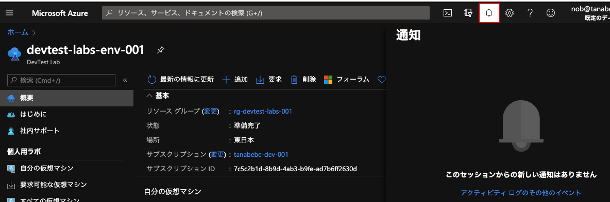

2. DevTest Labs作成
Azure Portalに入り，検索ボックスからDevTest Labsのサービスを検索し，選択します．

選択したらDevTest Labsのサービスへ移動するので，追加のボタンをクリックします．

DevTestのラボ作成画面が表示されるので基本設定情報を入力していきます．
| 項目名 | 入力値 |
|---|---|
| サブスクリプション | 無料枠での使用であれば無料試用版と出ていると思うのでそのままでOKです． 無料試用版でない方は自身のサブスクリプションを選択してください． |
| リソースグループ | 何も項目にないと思うので，新規作成のリンクをクリックし，作成してください． 命名は自由ではありますが，リソースグループは rg-で始まるのがMicrosoftの推奨とのことです．命名規則を気にされる方はこちらにあるResourceGroupを参照いただければと思います． |
| ラボ名 | こちらは入力チェックに引っかからないように自由に決めてOKです． |
| 場所 | 東日本を選択しましょう． |

自動シャットダウンを選択して，入力していきます．
| 項目名 | 入力値 |
|---|---|
| 有効 | リソース削除などをしていない場合のコスト管理としても事故らないように，オンにしておきましょう． |
| スケジュールされたシャットダウン | 画像では19:00で設定していますが，meetupの時間を考慮して21:00で設定しましょう． |
| タイムゾーン | (UTC+09:00) Osaka, Sapporo, Tokyoを選択しましょう． |
| 自動シャットダウンの前に通知を送信しますか？ | 不要なので今回はいいえにします |

ここまで入力が完了したら確認および作成のボタンをクリックしましょう． Azureが検証をしてくれるので問題なければ作成のボタンをクリックします．

サービスのデプロイが始まるので，少し待ちましょう．完了すると以下のとおりに告知されるのでリソースに移動で移動しましょう．
もちろんこの画面を離れても問題ないです．その場合はAzure Portalの通知からデプロイの進行状態が通知から確認できますので，こちらからでもOKです．
